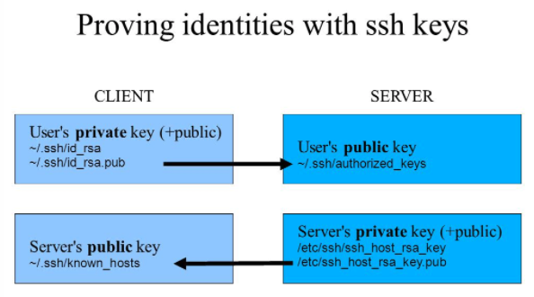

การใช้งาน SSH
OpenSSH หรือ secure shell เป็น protocol มาตรฐาน รองรับการเข้าถึง แบบ remote โดย service จะทำงาน ที่ port 22 โดยปรกติ จะมีการติดตั้ง package openssh-server มาให้อยู่แล้ว ในบทนี้จะใช้งาน Vagrantfile ที่มีการสร้าง server 2 เครื่อง ดังนี้
cd sshlab
vi Vagrantfile
# -*- mode: ruby -*-
# vi: set ft=ruby :
Vagrant.configure("2") do |config|
config.vm.box = "bento/centos-7.3"
config.vm.define "client" do |client|
client.vm.network "private_network", ip: "192.168.33.20"
client.vm.hostname = "client.example.com"
end
config.vm.define "server" do |server|
server.vm.network "private_network", ip: "192.168.33.30"
server.vm.hostname = "server.example.com"
end
config.vm.provider "virtualbox" do |vb|
vb.memory = "1024"
vb.cpus = "1"
end
end
จากนั้นก็ทำการสั่งคำสั่ง vagrant up
# vagrant up
# vagrant status
Current machine states:
client running (virtualbox)
server running (virtualbox)
การเข้าใช้งาน
เนื่องจากมีเครื่อง server 2 เครื่อง ดังนั้น ตอนที่ใช้งานคำสั่ง vagrant ssh จะต้องเปลี่ยนเป็น vagrant ssh client , vagrant ssh server
$ vagrant ssh client -c "ip a"
$ vagrant ssh server -c "ip a"
สามารถใช้งานร่วมกับ option -c "command" เพื่อส่งคำสั่งไปทำงาน ใน VM ที่ต้องการและแสดงผลออกทางหน้าจอ
ขอทบทวนอีกครั้งว่า user บน vm คือ vagrant และมี password คือ vagrant นอกจากนั้นยังเป็น sudo user อีกด้วย
$ vagrant ssh client
$ ssh vagrant@192.168.33.30
[vagrant@client ~]$ ssh vagrant@192.168.33.30
The authenticity of host '192.168.33.30 (192.168.33.30)' can't be established.
ECDSA key fingerprint is c0:1c:e4:82:6f:f4:6f:ba:38:9c:6c:23:40:fe:2d:4f.
Are you sure you want to continue connecting (yes/no)? yes
Warning: Permanently added '192.168.33.30' (ECDSA) to the list of known hosts.
vagrant@192.168.33.30's password:
Last login: Mon Nov 20 14:20:11 2017 from 10.0.2.2
[vagrant@server ~]$
[vagrant@server ~]$ sudo cat /etc/ssh/ssh_host_ecdsa_key.pub
ecdsa-sha2-nistp256 AAAAE2VjZHNhLXNoYTItbmlzdHAyNTYAAAAIbmlzdHAyNTYAAABBBM9POfR+ntyTx9Uiu3sdtJ4QATIGsGoZx8wD602/0AK2Lx64lDjyLVNMq5V6bXtaiOIZtsxiyBwP7scoY9Is5Og=
[vagrant@server ~]$ exit
[vagrant@client ~]$ cat ~/.ssh/known_hosts
192.168.33.30 ecdsa-sha2-nistp256 AAAAE2VjZHNhLXNoYTItbmlzdHAyNTYAAAAIbmlzdHAyNTYAAABBBM9POfR+ntyTx9Uiu3sdtJ4QATIGsGoZx8wD602/0AK2Lx64lDjyLVNMq5V6bXtaiOIZtsxiyBwP7scoY9Is5Og=
Verify package ที่เกี่ยวของ
[vagrant@client ~]$ rpm -qa | grep openssh
openssh-clients-6.6.1p1-35.el7_3.x86_64
openssh-6.6.1p1-35.el7_3.x86_64
openssh-server-6.6.1p1-35.el7_3.x86_64
[vagrant@client ~]$ sudo systemctl status sshd
[vagrant@client ~]$ sudo systemctl status firewalld
[vagrant@client ~]$ sudo firewall-cmd --permanent --add-service ssh
[vagrant@client ~]$ sudo firewall-cmd --reload
การ login ด้วย public/private keys
[vagrant@client ~]$ ssh-keygen -t rsa
[vagrant@client ~]$ ls -Z ~/.ssh/
-rw-------. vagrant vagrant unconfined_u:object_r:ssh_home_t:s0 authorized_keys
-rw-------. vagrant vagrant unconfined_u:object_r:ssh_home_t:s0 id_rsa
-rw-r--r--. vagrant vagrant unconfined_u:object_r:ssh_home_t:s0 id_rsa.pub
-rw-r--r--. vagrant vagrant unconfined_u:object_r:ssh_home_t:s0 known_hosts
ทดสอบ ssh เข้าหาเครื่อง client เอง
[vagrant@client ~]$ ssh vagrant@localhost
The authenticity of host 'localhost (::1)' can't be established.
ECDSA key fingerprint is c0:1c:e4:82:6f:f4:6f:ba:38:9c:6c:23:40:fe:2d:4f.
Are you sure you want to continue connecting (yes/no)? yes
Warning: Permanently added 'localhost' (ECDSA) to the list of known hosts.
vagrant@localhost's password:
Last login: Mon Nov 20 14:34:21 2017 from 10.0.2.2
[vagrant@client ~]$
[vagrant@client ~]$ exit
logout
Connection to localhost closed.
[vagrant@client ~]$
Copy public key (id_rsa.pub) ไปยัง server ที่เป็นเป้าหมาย และเมื่อทำการ ssh login อีกครั้ง จะไม่ต้องใช้ password
[vagrant@client ~]$ cat ~/.ssh/id_rsa.pub >> ~/.ssh/authorized_keys
[vagrant@client ~]$ ssh vagrant@localhost
Last login: Mon Nov 20 14:48:18 2017 from ::1
[vagrant@client ~]$

copy id_rsa.pub ของเครื่อง client ไปยังเครื่อง server ด้วยคำสั่ง ssh-copy-id
$ ssh-copy-id vagrant@192.168.33.30
/usr/bin/ssh-copy-id: INFO: attempting to log in with the new key(s), to filter out any that are already installed
/usr/bin/ssh-copy-id: INFO: 1 key(s) remain to be installed -- if you are prompted now it is to install the new keys
vagrant@192.168.33.30's password:
Number of key(s) added: 1
Now try logging into the machine, with: "ssh 'vagrant@192.168.33.30'"
and check to make sure that only the key(s) you wanted were added.
[vagrant@client ~]$
[vagrant@client ~]$ ssh vagrant@192.168.33.30 -C "hostname"
server.example.com
option -C "command_torun" เป็นการส่ง คำสั่งไปยังเครื่อง เป้าหมาย โดยไม่ต้อง เข้าไปยังเครื่อง
[vagrant@client ~]$ ssh vagrant@192.168.33.30 -C "sudo yum update -y"
ปรับแต่งการทำงานของ openssh-server โดยสามารถทำได้ผ่านทาง /etc/ssh/sshd_config
[vagrant@server ~]$ sudo cp /etc/ssh/sshd_config /etc/ssh/sshd_config.orig
[vagrant@server ~]$ sudo vi /etc/ssh/sshd_config
ค่าที่เห็น จะป็นค่า default ยกตัวอย่าง
17 #Port 22
49 #PermitRootLogin yes
50 #StrictModes yes
55 #PubkeyAuthentication yes
59 AuthorizedKeysFile .ssh/authorized_keys
77 #PasswordAuthentication yes
เปลี่ยน ค่า port และ save file
17 Port 2022
[root@server ~]# semanage port -a -t ssh_port_t -p tcp 2022
[root@server ~]# semanage port -l | grep 2022
ssh_port_t tcp 2022, 22
หลังจาากทำการเปลี่ยน port ไปแล้วให้ลองทดสอบด้วยการ ssh จาก client
[vagrant@client ~]$ ssh vagrant@192.168.33.30
ssh: connect to host 192.168.33.30 port 22: Connection refused
จะต้องใช้ option -p เพื่อระบุ port
[vagrant@client ~]$ ssh vagrant@192.168.33.30 -p 2022
Last login: Mon Nov 20 15:42:18 2017 from 192.168.33.20
[vagrant@server ~]$
ตั้ง password แก่ root ในเครื่อง server
[vagrant@server ~]$ sudo su -
[root@server ~]# passwd
Changing password for user root.
New password:
BAD PASSWORD: The password fails the dictionary check - it is based on a dictionary word
Retype new password:
passwd: all authentication tokens updated successfully.
[root@server ~]# exit
[vagrant@server ~]$ exit
ทดสอบ login จาก client ด้วย user root และใช้ password
[vagrant@client ~]$ ssh root@192.168.33.30 -p 2022
root@192.168.33.30's password:
Last login: Mon Nov 20 15:58:01 2017
[root@server ~]#
จะเป็นว่า สามารถ login ได้ คราวนี้ ให้ทำการแก้ไข /etc/ssh/sshd_config และปรับแต่งค่าดังนี้
[root@server ~]# vi /etc/ssh/sshd_config
50 PermitRootLogin no
[root@server ~]# systemctl restart sshd
[root@server ~]# exit
ทำสอบ login ด้วย root อีกครั้ง หลังจากการยกเลิกการเข้าถึงด้วย root
[vagrant@client ~]$ ssh root@192.168.33.30 -p 2022
root@192.168.33.30's password:
Permission denied, please try again.
root@192.168.33.30's password: